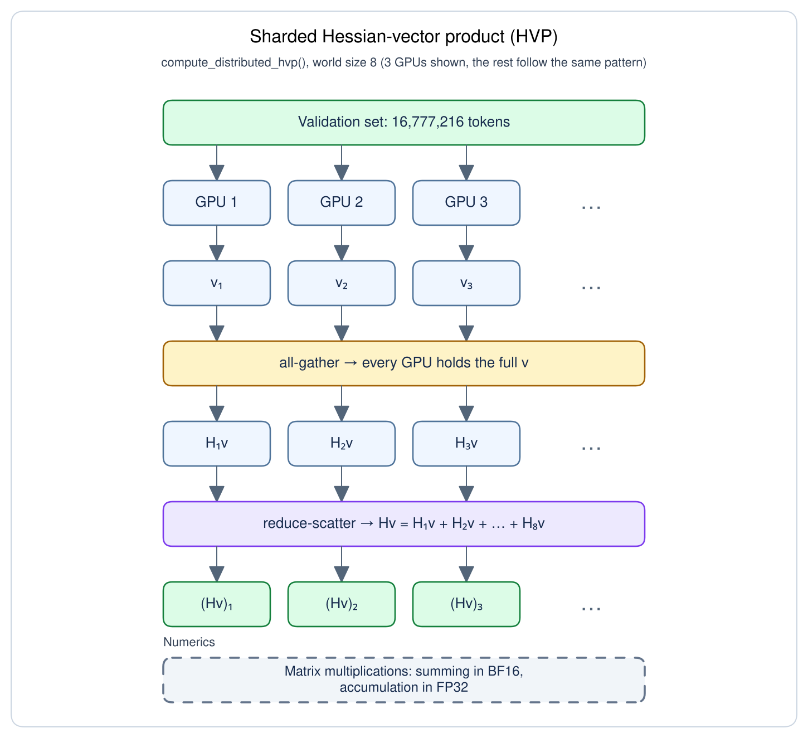

The edge-of-stability learning rate $\times$ Hessian sharpness = 2 describes a beautiful equilibrium -- optimizers choose their preferred basin shape during descent! But edge-of-stability has a major limitation: it describes SGD but not Muon, SOAP, or Shampoo, the most performant optimizers. Our work discovers a new equilibrium learning rate $\times$ pathspring = bubbleforce that is generic to any non-adaptive optimizer, including Muon. Surprisingly, our bubbleforce equilibrium is secretly a theory of momentum invoking the geometry of polynomial roots on the complex plane.
Prior work equilibrated $\eta\lambda=2$ for constant-LR, single-optimizer runs. Bubbleforce robustly predicts the sharpness of unmodified, full-featured nanoGPT world records with hybrid Muon/Adam optimization and scheduled LR. In fact, Muon achieves bubbleforce equilibrium so quickly that we can now enforce a curvature schedule using only LR and momentum knobs. We hope that further bubbleforce mechanism research will clarify which aspects of optimizers are / are not self-regularizing -- and thereby aid the design of frontier pretraining optimizers.
A Refresher on Edge-of-Stability
Optimizers are wondrous creatures. They make decisions.a
Ancient ML folklore taught that for quadratic basins like $L(x)=\frac{1}{2}\lambda x^2$, a learning rate of $\eta=\frac{2}{\lambda}$ would levitate perfectly, maintaining constant loss as it overshot the minimum.
Therefore, smaller LRs than $\frac{2}{\lambda}$ would fall to the minimum, and larger LRs would bounce out!
Our job as AI scientists, then, would be to respect the data-given curvature by tuning the LR for convergence. This stability boundary is extremely intuitive (and correct). But in the context of training neural networks, it is completely backwards.
Do Not Be Misled by Descent Lemma and Its Consequences
Claim. Let $L(X)=\tfrac12 X^\top HX$ with constant Hessian $H=H^\top\succ0$, and write $\lambda=\lambda_{\max}(H)$. Gradient descent with constant learning rate $\eta$ satisfies
$$\underset{\color{red}{\text{converges to minimum}}}{X_t\to0\;\text{for all }X_0}\quad\underset{\color{red}{\text{iff}}}{\Longleftrightarrow}\quad\underset{\color{red}{\text{LR is tuned to curvature}}}{0<\eta\lambda<2}.$$
Proof. $$\begin{align*} X_{t+1}&=X_t-\eta\nabla L(X_t)=(I-\eta H)X_t \tag{one GD step}\\ X_t&=(I-\eta H)^tX_0 \tag{iterate GD}\\ \text{convergence}&\iff\max_i|1-\eta\lambda_i(H)|<1 \tag{all modes decay}\\ &\iff\boxed{0<\eta\lambda<2}. \end{align*}$$
The above picture is wrong because optimizers make decisions.
In real loss landscapes, there is a continuum of low-loss, reachable basins with any sharpness we could want.b Even the simplest optimizers choose basins wisely. We can pick any learning rate $\eta$, and raw gradient descent "skis" into a basin where the curvature adapts to the pre-selected learning rate perfectly to achieve $\lambda=\frac{2}{\eta} \iff \boxed{\eta\lambda=2}$.
The Self-Stabilization Mechanism
Damian et al. (2023) found that Hessian sharpness in constant-LR SGD evolves in 4 phases:
- Progressive sharpening, where $\lambda$ rises up to its equilibrium value $\frac{2}{\eta}$.
- Blowup, where $\lambda > \frac{2}{\eta}$ induces oscillations along the principal Hessian eigenvector.
- Self-stabilization, where 3rd order loss dynamics pull sharpness back to its equilibrium value; oscillations continue to excite.
- Return to stability, where oscillations along the principal Hessian eigenvector finally die out after sharpness re-equilibrates.
Long training runs cycle between the last 3 stages (Figure 1b). The mechanism for Self-stabilization is derived in Theorem 1.
Assume loss $L$’s 3rd order Taylor expansion is a good approximation. Write $W_t=\bar W+x_tu$, where $\bar W$ is the locally time-averaged iterate, $u$ is its unit top Hessian eigenvector, and $S$ is the corresponding simple eigenvalue.
Using $\mathbb E$ for local time averages:
$$\mathbb E[\nabla L(W_t)]\approx\nabla L(\bar W)+\underbrace{{\color{red}\enclose{updiagonalstrike}{{\color{black}\mathbb E[x_t]S(\bar W)u}}}}_{\color{red}{\substack{\mathbb E[x_t]=0\\\text{oscillations are symmetric}}}}+\underbrace{\frac12\mathbb E[x_t^2]\nabla S(\bar W)}_{\color{red}{\text{sharpness penalty}}}.$$
Thus, oscillations cause a 3rd-order regularization:
$$\boxed{\Delta W_{\mathrm{cubic}}=-\frac{\eta}{2}\mathbb E[x_t^2]\nabla S(\bar W)}\tag{Sharpness-lowering force}$$
The quadratic loss approximation is usually pretty good!d But oscillations get dynamically killed by 3rd order sharpness regularizations. The lifecycle of a loss spike induced by curvature/LR incompatibility proceeds as:
Figure 1b. A reproduction of the Central Flows CIFAR-10 ViT result.e For details, see Appendix A5.
- oscillations begin at $\lambda > \frac{2}{\eta}$
- hard oscillations get harder sharpness regularizations: higher $\mathbb E[x_t^2]$ gives higher sharpness downforce $-\frac{\eta}{2}\mathbb E[x_t^2]\nabla S(\bar W)$
- sharpness suppression continues until oscillations are gone: downforce $-\frac{\eta}{2}\mathbb E[x_t^2]\nabla S(\bar W)\ne0$ for any $\mathbb E[x_t^2]>0$ when $\nabla S(\bar W)\ne0$
This gives a direct mechanism for why the sharpness stabilizes at exactly $\lambda = \frac{2}{\eta} \iff \eta\lambda=2$.
Beyond Raw Gradient Descent
Familiar momentum rules have explicit quadratic stability boundaries:
Momentum $M$ is a linear combination of lagged gradients. A momentum kernel is the vector of linear coefficients $c=(c_0,c_1,\ldots)$ such that
$$M_t=\sum_{j\ge0}c_j\nabla L(W_{t-j}).$$
We adopt the convention $\sum_{i\ge0}c_i=1$.f
$$c_i=\begin{cases}1,&i=0,\\0,&i\ge1.\end{cases}$$
Raw SGD is just the trivial momentum kernel.

Edge-of-stability (Cohen et al., 2021):
$$\eta\lambda=2.$$
Given $0\le\beta<1$,
$c_j=(1-\beta)\beta^j$.

Edge-of-stability (Cohen et al., 2021):
$$\eta\lambda=\frac{2(1+\beta)}{1-\beta}.$$
For its stochastic extension, see Andreyev et al. (2026).
With heavy-ball decay $0\le\beta<1$ and Nesterov mixing $0\le\nu\le1$,
$$c_i=(1-\nu)\mathbf{1}_{i=0}+\nu(1-\beta)\beta^i.$$

Edge-of-stability (Gitman et al., 2019):
$$\eta\lambda=\frac{2(1+\beta)}{1+\beta-2\nu\beta}.$$
To extend these results to standard reference pretraining implementations like nanoGPT, we need to generalize the edge-of-stability for:
- minibatch stochasticityh
- heterogeneous optimization, with some parameters optimized by Adam and others by Muon/SOAP
- learning rate scheduling, which would continuously shift the equilibrium curvature $\lambda=\frac{2}{\eta}$.
- spectral geometryi
- momentum from arbitrary linear combinations of lagged gradientsj
Our contribution is that our bubbleforce edge-of-stability equilibrium $\eta\zeta=\bubbleforce$ handles all of these new considerations simultaneously for real nanoGPT world records and beyond.
Overview
Overview
Optimization trajectories vibrate with oscillatory energy. Every momentum kernel resonates with a different set of oscillation frequencies. For example, raw SGD resonates with period-2 rotations, which causes the classic river-valley oscillations in Figure 2.
Resonant vibrations can be amplified or dampened. Amplification leads to loss spikes and eventually training divergence; a consistently amplified vibration is just another name for an explosion. Our edge-of-stability theory relies on 3 ideas:
- Every momentum kernel has a characteristic polynomial with complex roots, which are the resonance fingerprint.
- SGD under any momentum kernel equilibrates to $\eta\lambda=\bubbleforce$, where bubbleforce $\bubbleforce$ measures the explosiveness of the momentum kernel via its complex roots.
- Any optimizer whose state is fully specified by the momentum buffer (e.g. SGD, Muon) equilibrates to a generalized law $\eta\zeta=\bubbleforce$, where pathspring $\zeta$ is a novel way to measure sharpness.
Before our formal definitions and theorems, we recommend skimming this visual sketch of bubbleforce theory. The imagery may be helpful in motivating some of the symbolic drudgery.
Deriving Bubbleforce
Every Momentum Kernel Resonates with Something
We will first analyze the simple SGD case as an intuition pump for bubbleforce; our first result will show that prior edge-of-stability work is a special case of bubbleforce.
Consider a constant-Hessian loss with minimum at the origin:
$$L(W)=\tfrac12\lambda\|W\|^2 \quad\Longrightarrow\quad \nabla L(W_t)=\lambda W_t.$$
We can perturb a single checkpoint in an SGD optimization path and observe the differences in the forked trajectories. Write $\delta W_t=\widetilde W_t-W_t$ and subtract the original trajectory from the perturbed one:
$$\begin{array}{rcll} \widetilde W_{t+1}&=&\widetilde W_t-\eta\lambda\sum_i c_i\widetilde W_{t-i}&\quad\scriptstyle\text{(perturbed trajectory)} \\[0.3em] -\,W_{t+1}&=&-\,W_t+\eta\lambda\sum_i c_iW_{t-i} \\[0.5em]\hline\\[-0.5em] \delta W_{t+1}&=&\delta W_t-\eta\lambda\sum_i c_i\delta W_{t-i}. \end{array}$$
Surprisingly, some (momentum kernel, loss landscape) pairs seem to have a resonance that causes future perturbations to be very predictable.
These orderly perturbations are complex oscillations -- every perturbation rotates the same angle and grows/shrinks by the same factor. We can represent these with complex numbers $z\in\mathbb{C}$, as visualized in Figure 5.
To check whether a specific candidate oscillation $z_{\text{cand}}\in\mathbb{C}$ resonates with a given momentum $c$, learning rate $\eta$, and curvature $\lambda$, we can simply substitute $z_{\text{cand}}^k=\delta W_k$ and check whether $z^{t+1}_{\text{cand}}\overset{?}{=}z^t_{\text{cand}}-\eta\lambda\sum_k c_kz^{t-k}_{\text{cand}}$.
How do we even know there are any resonant oscillations?
We can attempt to solve the equation for all complex roots and reason about whether the root set is empty.
$$\begin{align} z^t-\eta\lambda \sum_k c_k z^{t-k}&=z^{t+1}\tag{Substitute SGD perturbation $\delta W_k$ with $z^k$.}\\ P_{\eta\lambda, c}(z):=z^{t+1}-z^t+\eta\lambda \sum_k c_k z^{t-k}&=0\\ \end{align} $$
Note that $P_{\eta\lambda, c}(z)$ -- the characteristic polynomial of our momentum kernel $c$ at our current conditions $\eta\lambda$ -- is a complex polynomial of degree $t+1$. By the Fundamental Theorem of Algebra, this polynomial has $t+1$ (possibly duplicated) complex roots!
Every momentum kernel has at least one resonant oscillation $z\in\mathbb{C}$.
Bubbleforce is the Root-Radius Constraining Complex Oscillations
As per Figure 5, SGD has an explosive positive-feedback loop from an oscillation $z$ with modulus $|z|>1$. So a necessary condition for training stability is for the largest root -- the root radius -- to be at most 1. This condition forms the foundation of our bubbleforce theory.
Nonconstant polynomial $P$'s root radiusk is:
$$\rho(P)=\max_{P(z)=0}|z|.$$
We can use the definition of bubbleforce on the right to answer the question "Why does the product $\eta\lambda$ equilibrate to 2?".
Why not 1 or 3 or 2.5? What is so special about this constant?
If you grind out the symbolic cruft for descent lemma, the "2" roughly comes from 1d convex functions having a "left side" and a "right side" of the minimum. But this does not generalize to heavy-ball+Nesterov momentum and certainly not to anything more complicated/arbitrary.
Bubbleforce has a geometric interpretation of SGD's 2, heavy-ball+Nesterov SGD's $\frac{2(1+\beta)}{1+\beta-2\nu\beta}$, and every other momentum kernel's equilibration point.
Given learning rate $\eta$ and decoupled weight decay $\gamma_{\mathrm{wd}}$, let $P_{\eta\lambda,c}(z)$ be momentum kernel $c$'s characteristic polynomial for curvature $\lambda$.
Suppose we start with very small $\eta\lambda >0$ and increase $\eta\lambda$ over time. Bubbleforce is the first value of $\eta\lambda$ to make $P_{\eta\lambda,c}$'s root locus touch the unit circle:
$$\boxed{\bubbleforce(c)=\min\{\eta\lambda>0\ \text{such that}\ \rho(P_{\eta\lambda,c}(z))=1\}}.$$
Figure 6
Claim. The bubbleforce of momentumless SGD is $2$.
Proof. At near-zero learning rate, the max rootn of $P_{\eta\lambda}(z)$ is $(1-\epsilon)+0i$. Bubbleforce is reached at $-1+0i$. The diameter of the complex unit circle is $\boxed{2}$. $\square$
For Example 3’s untruncated kernel with no weight decay, let $r$ be a root of
$$P_{\eta\lambda}(z)=z^2-\left(1+\beta-(1-\nu\beta)\eta\lambda\right)z+\beta\!\left(1-(1-\nu)\eta\lambda\right).$$
Case 1: Nonreal roots.
The roots are $r,\bar r$, so
$$P_{\eta\lambda}(z)=(z-r)(z-\bar r).$$
The constant term is $r\bar r=|r|^2$:
$$|r|^2=\beta\!\left[1-(1-\nu)\eta\lambda\right].$$
Since $\eta\lambda>0$ and $0\le\nu\le1$,
$$|r|^2\le\beta<1.$$
Nonreal roots cannot reach the unit circle.
Case 2: Real roots.
A real root touches the unit circle only at $r=+1$ or $r=-1$. But
$$P_{\eta\lambda}(1)=\eta\lambda(1-\beta)>0,$$
so $+1$ is excluded. The only possible escape point is
$$\boxed{r=-1+0i=e^{i\pi}}.$$
The escape angle is 180°.
Bubbleforce. Substitute the escape point $r=-1$ into the polynomial:
$$0=P_{\eta\lambda}(-1)=2(1+\beta)-\eta\lambda(1+\beta-2\nu\beta).$$
Solving for $\eta\lambda$ gives
$$\boxed{\bubbleforce=\frac{2(1+\beta)}{1+\beta-2\nu\beta}}.\qquad\square$$
With our constant-Hessian assumption, we can prove Theorem 2 below. We further assume fictitiously that Hessians move slowly,p so these analyses can be used on non-constant Hessian loss landscapes too, yielding Conjecture 1.
On a quadratic loss with fixed Hessian $H\succ0$, learning rate $\eta>0$, and momentum kernel $c$,
$$\boxed{\eta\lambda_{\max}(H)<\bubbleforce\ \Longrightarrow\ \lim_{t\rightarrow\infty}W_t=W^*},$$
where $W^*$ is the minimizer.
Conjecture 1. (SGD reaches bubbleforce equilibrium for real pretraining)q
Under persistent progressive sharpening and a slowly-moving Hessian spectrum, SGD with momentum kernel $c$ and constant learning rate $\eta$ satisfies: $$\boxed{\lim_{t\rightarrow\infty}\eta\lambda_t=\bubbleforce}.$$
All these momentum stability results apply only to Euclidean optimization (SGD) so far. It would be really nice if they applied to Muon.
The punchline of the next section is that analogues of Theorem 2 and Conjecture 1 hold if we simply swap out Hessian sharpness $\lambda=\max_{\lVert v\rVert=1} v^\top Hv$ for a quantity we call pathspring $\zeta$.
Deriving Pathspring
Deriving Pathspring
Pathspring is a kind of sharpness, too.
When Hessian sharpness is high, the loss landscape changes quickly along the principal Hessian eigenvector. When pathspring sharpness is high, the loss changes quickly along the principal eigenvector of a different linear operator.
We will define pathspring in a way that is friendly to not only Muon but also every other non-adaptive optimizer.r
The rest of this section is mostly animations and notation. We recommend alternating between watching videos and reading definitions until the geometry of the pathspring $\zeta$ definition sinks in.
Freeze the lagged gradients. Momentum then depends only on the current weights:
$$\begin{align*} M_t(\nabla L(W)) &={\color{red}{c_0}}\nabla L(W)+\underbrace{\sum_{i>0}c_i\nabla L(W_{t-i})}_{\text{frozen momentum buffer}}. \end{align*}$$
The optimizer operator is
$$\boxed{\script{T}(W):=A\!\left(M_t(\nabla L(W))\right)}.$$
Thus $W_{t+1}=W_t-\eta\script{T}(W_t)$.
A small artificial weight displacement $\delta W_t$ changes the update by
$$\delta(\text{update})\approx \underbrace{\color{teal}{-\eta\times\script{J}_{\script{T}}(W_t)}}_{\color{teal}{\text{Hooke's constant}}}\times \underbrace{\color{purple}{\delta W_t}}_{\color{purple}{\text{Spring displacement}}}.$$
Each Jacobian eigenvector yanks the perturbed trajectory back to the original path with a spring-like force. Some eigenvectors are stiff springs, others are soft springs. We call the Hooke's constant (scaled by $\frac{1}{c_0\eta}$) of the stiffest eigenvector-spring the pathspring.
For $c_0>0$, the pathspring is the largest positive real eigenvalue:
$$\boxed{\zeta_t=\lambda_{\max}^{+}\!\left(\frac{\script{J}_{\script{T}}(W_t)}{c_0}\right)}.$$
We want to show that pathspring forms a similar bubbleforce equilibrium to Conjecture 1's. We'd also like a numerical method for computing pathspring. A chain-rule expansion of the optimizer operator Jacobian is helpful for both.
Muon uses the polar factor $A(M)=\operatorname{msign}(M):=UV^\top$, where $M=U\Sigma V^\top$ is a thin SVD. Let $W$ contain the Muon weights, with Adam weights held fixed.
The Muon optimizer operator is $\script{T}(W)=\operatorname{msign}\!\left(M_t(\nabla L(W))\right)$.
We can expand with chain rule, using $\frac{dM_t(G)}{dG}=c_0I$. $$\begin{align*} \script{J}_{\script{T}}(W_t) &=\underbrace{\color{teal}{\frac{d\,\operatorname{msign}(M_t)}{dM_t}}}_{\color{teal}{\script{J}_{\operatorname{msign}}(M_t)}} \times\underbrace{\color{purple}{\frac{dM_t(G)}{dG}}}_{\color{red}{c_0I}} \times\underbrace{\color{maroon}{\frac{d\nabla L(W_t)}{dW_t}}}_{\color{maroon}{H(W_t)}}\\ &={\color{red}{c_0}}\times{\color{teal}{\script{J}_{\operatorname{msign}}(M_t)}}\times{\color{maroon}{H(W_t)}}. \end{align*}$$
For a non-adaptive optimizer with momentum kernel $c$ and constant learning rate $\eta$, this equilibrium holds:
$$\boxed{\lim_{t\rightarrow\infty}\eta\zeta_t=\bubbleforce}.$$
Justification. For Muon, write $\delta W_t=\widetilde W_t-W_t$ and $\delta M_t=\widetilde M_t-M_t$. Subtract the trajectories and linearize the update in $\delta M_t$:
$$\begin{array}{rcl} \widetilde W_{t+1}&=&\widetilde W_t-\eta\,\operatorname{msign}(\widetilde M_t) \\[-0.2em] &&\hfill\scriptstyle\text{(perturbed trajectory)} \\[0.3em] -\,W_{t+1}&=&-\,W_t+\eta\,\operatorname{msign}(M_t) \\[0.5em]\hline\\[-0.5em] \delta W_{t+1}&\simeq&\delta W_t-\eta\,\mathcal J_{\operatorname{msign}}(M_t)[\delta M_t]. \end{array}$$
Here $\delta M_t\simeq\sum_i c_iH(W_{t-i})\,\delta W_{t-i}$. With the local Hessian and Muon Jacobian fixed, a perturbation along an eigenmode of $\script{J}_{\script{T}}(W_t)/c_0$ obeys
$$\boxed{\delta W_{t+1}\simeq\delta W_t-\eta\zeta_t\sum_ic_i\delta W_{t-i}}.$$
This frozen linear recurrence has the same characteristic polynomial as SGD, with $\eta\lambda$ replaced by $\eta\zeta_t$, so the proof for Theorem 2 can be applied without loss of generality.
Example 7. (Numerical method for pathspring $\zeta$ computation)
We compute $\zeta$ using Arnoldi iteration on the implicit operator $\script{J}_{\script{T}}(W_t)/c_0$.
These can be decomposed into an HVP and then JVP.s
$$\frac{\script{J}_{\script{T}}(W_t)v}{c_0} =\underbrace{\script{J}_{\operatorname{msign}}(M_t)\!\left[ \underbrace{H(W_t)v}_{\color{red}{\text{HVP}}} \right]}_{\color{red}{\text{JVP}}}.$$
For Arnoldi iteration (e.g. Krylov basis dimension), see Appendix A2.
For HVP details (e.g. number of fineweb validation tokens), see Appendix A3.
For JVP details (e.g. methodology for linearizing Newton-Schulz), see Appendix A4.
SGD’s Hessian sharpness is a special case of pathspring: in Example 6, $\script{J}_A=I$ for SGD, so $\zeta_t=\lambda_{\max}^{+}(H(W_t))$.
We now show that the bubbleforce equilibrium $\eta\zeta=\bubbleforce$ is ready to describe frontier pretraining optimization with no further modifications.t
Empirical Results
Empirical Results
We showcase bubbleforce equilibrium on Keller Jordan's nanoGPT speedrunning harness, using Konstantin Mishchenko's nanoGPT Muon baseline as our reference implementation. For further details on each run, see Appendix A1.
Previous edge-of-stability results are tested in the easiest setting -- what happens when you hold learning rate fixed? Our first batch of results is a variation on this using hyperparameter shocks.
Predicting Edge-of-Stability Under Hyperparameter Shocks
We first hold the reference nanoGPT run at a constant LR for 2000 iterations to ensure bubbleforce equilibration. Then, we shock its hyperparameters by:
- halving LR
- doubling LR
- decreasing momentum to halve bubbleforce
- increasing momentum to double bubbleforce
We find that in all cases, bubbleforce predicts both the pre-shock and post-shock equilibria correctly.u Surprisingly, we find that some equilibrations only take a few iterations!
Figure 8dv
Predicting Edge-of-Stability for an Entire nanoGPT Run
We have assumed that pathspring $\zeta=\frac{\bubbleforce}{\eta}$ equilibrates through a constant learning rate $\eta$ environment. We have no theory for what happens when learning rate $\eta_t$ is constantly shifting (as is standard for LR decay), since the equilibrium is constantly receding as the optimizer chases it.w We have no out-of-equilibrium thermodynamics to apply to bubbleforce.
And yet! The bubbleforce equilibration process is so fast that we actually are able to predict the pathspring $\zeta$ of the unmodified nanoGPT Muon world record despite its LR schedule! In practice, we can predict $\zeta$ on real architectures, real datasets, real hyperparameter settings.
We can even make good predictions on momentum schedules as shown by our MaxEntSlop $\zeta$ measurements.
Figure 9a
Sharpness Scheduling
The speed of bubbleforce equilibrium enables us to enact some whimsy.
Learning rate schedules. Minibatch size schedules. Momentum schedules. We can schedule any quantity that we set during pretraining. x
But what about scheduling a quantity we have no direct access to?
Our final result is a demonstration of a sharpness schedule. Bubbleforce equilibration is so fast that we can use LR and momentum knobs to trace arbitrary sharpness time series shapes. The pathspring $\zeta$ follows the desired path. The validation loss goes down.
We can play etch-a-sketch with the sharpness of a neural network while training it well. I wanted a Bulbasaur, and I got a Bulbasaur.
Figure 10y
One somewhat-controversial conjecture is that low sharpness is related to improved generalization and grokking. If true, we could imagine wanting to add features (learn) and prune features (grok) at different times. With bubbleforce, we can design entry into a high or low sharpness regime however we please!
Future Work
A Millennium problem has fallen to AI, but every nanoGPT record is held by a human. Pretraining theory is really hard! We think progress will come inevitably from edge-of-stability work for the same reason that no new planets were discovered for 4000 years ... and then Uranus and Neptune within the same century.
Discovering Ice Giants
Uranus, 1781: William Herschel, a musician, decided he was going to study double stars.z Herschel DIY'd his own ludicrous copper/tin mirrors for a hypermagnifying telescope.aa Herschel slowly swept the night sky at $4.5\times$ higher magnification than anyone before, and he spotted Uranus by coincidence. Assuming it was a comet, Herschel used a focal length trick to confirm Uranus was not a star (Figure 11), and the rest is history.
The discovery of Uranus required misguided equipment applied to a doomed project where a wrong categorization accidentally inspired the right data collection technique.
$$\boxed{\text{Astronomically lucky.}}$$
Neptune, 1846: By 1834, Uranus's orbit undeniably showed deviations from Newtonian models. People suspected a dark shadowy unknown yanking Uranus out of orbit. The targeted search for a planet was completely different; discovering this shadowy source of gravity -- Neptune -- only required inventing perturbation theory and applying it to Uranus's orbital data (Figure 12). It took 12 years.
$$\boxed{\text{Inevitable.}}$$ There was so little luck involved that Neptune's sky location was first predicted concurrently by two separate astronomers.
We suspect that pretraining theory is mostly made of Uranuses. Eldritch fairies silently guide our models to victory, and their effects on the model are invisible to our current methods. They are unknown unknowns to us and a directed search for them is impossible.
Edge-of-stability is a Neptune. Pretraining trajectories deviate from the quadratic model, but the deviations tend to be regularizing -- even on optimizers for which we lack an edge-of-stability law. There are unseen benevolent dynamics regularizing our models for free. Today, we can only measure their effects crudely, but tomorrow, we may uncover the perturbation theory necessary to point our telescopes directly at the True Face of neural optimization. The eventual unmasking of these benevolent dynamics is inevitable.
Come discover Neptune with us!
Unsolved Mysteries
Mystery 1. We wanted to explain why Muon's edge-of-stability is based on pathspring $\zeta$ instead of on Hessian sharpness $\lambda$ like in SGD's edge-of-stability. Our initial hypothesis is that both equilibrate based on their direction sharpness -- the sharpness along their chosen update direction, which is the only thing an optimizer can feel -- and SGD happens to oscillate along the principal Hessian eigenvector. Our expectation was that Muon would oscillate along the top $k$ principal $\script{J}_\script{T}$ eigenvectors. This is not true. Only 25% of the Muon oscillation is represented in the top-64 eigenspace of $\script{J}_\script{T}$. Where do the Muon oscillations live, if not in the sharpest directions?
Mystery 2. What causes progressive sharpening?
Mystery 3. Can bubbleforce be generalized to adaptive optimizers? We tried to apply $\eta\zeta=\bubbleforce$ to Adam. Like Bai et al. (2026), we found that almost-dead neurons invalidate principal eigenvalues as a measurement tool.
Mystery 4. Why does MaxEntSlop work? Why did the Bulbasaur's lower outline training run diverge? When is it acceptable to vary the momentum kernel mid-run, and when is it destabilizing?
Mystery 5. Hessian basis churn is actually quite dramatic; operator Jacobian $\script{J}_\script{T}$ basis churn is worse. Damian and Cohen's proposed mechanisms for self-stabilization involve oscillation along a fixed eigenvector over time to trigger a sharpness penalty in the gradient. But most top Hessian eigenvectors rotate out of the principal subspace by 50 degrees every iteration. For Muon's $\script{J}_\script{T}$ that angle is usually around 75 degrees. Are these rotations structured in a way that is compatible with the 3rd order regularization narrative?
Acknowledgements
Acknowledgements
Special thanks to:
- Sung Jae Bae, Jasper Gilley, Vasu Raman, Simran Arora, Akhil Ganti, James Ho, Joshua Penman, Eric Gu, Jerry Hong for helpful discussions.
- Lambda Labs, Strangeloop, Tear Labs, and Prime Intellect for generously providing compute for this project. Spamming Hessian-vector products for Arnoldi is not cheap.
Appendix
Appendix
A. Methods Details
A. Methods Details
A1. nanoGPT Implementation Details
A1. nanoGPT Implementation Details
The reference implementation is Konstantin Mishchenko’s nanoGPT Muon baseline, in Keller Jordan’s speedrunning harness. We test bubbleforce on this implementation and then 5 adaptations of this reference. MaxEntSlop changes the momentum kernel, see Appendix A7. Our other 4 shocks are applied to LR and momentum at update 2009. Prior to update 2009 we use the reference implementation.
| Setting | Value |
|---|---|
| Training data; sequence length | FineWeb; 1,024 tokens |
| Model | 12 layers; width 768; 6 attention heads; vocabulary 50,304 |
| Global batch; microbatch | 524,288 tokens; 64 sequences per GPU |
| Training duration | 3,250 updates |
| LR schedule | Constant for 975 updates, then linear decay to zero over 2,275 updates |
| Muon LR; weight decay | $\eta=0.025$; $\gamma_{\mathrm{wd}}=0.05$ |
| Muon momentum | Nesterov with $\beta=0.95$ |
| Newton–Schulz | 12 quintic iterations; coefficients $(2,-1.5,0.5)$ |
| AdamW LRs | Embeddings 0.7; output projection 0.004; scalar parameters 0.015 |
| AdamW settings | $\beta_1=0.8$, $\beta_2=0.95$; $\epsilon=10^{-10}$; weight decay 0.001 |
| Validation loss | 10,485,760 tokens; every 125 updates, every 25 in the final 10%, and at the endpoint |
| Setting | Value |
|---|---|
| Pre-shock Muon LR; momentum | $\eta=0.025$; Nesterov $\beta=0.95$ |
| Muon weight decay | $\gamma_{\mathrm{wd}}=0.05$ |
| LR schedule | Constant LR continuation instead of the baseline cooldown |
| Shared checkpoint; first affected update | 2,009; 2,010 |
| Shared pathspring observations | 92 through update 2,009; sampled every 25 updates from 975 to 2,000 |
| Shock | Muon LR | $\beta$ | Bubbleforce multiplier |
|---|---|---|---|
| Halve LR | 0.0125 | 0.95 | 1 |
| Double LR | 0.05 | 0.95 | 1 |
| Decrease momentum | 0.025 | 0.8990666066 | 1/2 |
| Increase momentum | 0.025 | 0.9750961447 | 2 |
Measurements. The six comparison panels use the latest supplied checkpoint measurements, each evaluated on 16,777,216 validation tokens. The four LR shock and momentum shock panels share 92 pathspring measurements through to update 2009, with an update every 25 steps from 975 to 2000. Each intervention begins at update 2010.
Lower envelope. For each candidate point in the lower envelope, we look within 400 training steps on either side, requiring at least 15 measurements in this window. After accounting for the local trend, we find the lowest level around which measurements repeatedly cluster. To identify clusters, we let each measurement contribute to the count at nearby values, with its contribution fading over a scale of roughly 7% per step. We then select measurements approximately 16% below to 19% above the lowest cluster’s center. We connect their original values and show all measurements in the faint curve on our graphs. We do not use the lower envelope values to establish equilibrium.
A2. Arnoldi Iteration Details
A2. Arnoldi Iteration Details
Symbols
| Symbol | Meaning |
|---|---|
| $A,\ n,\ p$ | Optimizer Jacobian; parameter count; requested eigenpairs |
| $m,\ q_m,\ Q_m$ | Krylov basis dimension; recent Krylov basis vector; Krylov basis |
| $h_m,\ u_m$ | Projection coefficients; remaining direction |
| $\overline H_m,\ H_m$ | Extended Hessenberg matrix; optimizer Jacobian in Krylov basis (Hessenberg matrix) |
| $\widehat\lambda_j^{(s)},\ y_j^{(s)},\ \widehat v_j$ | Selected eigenvalue; Hessenberg eigenvector; Hessenberg eigenvector in normal basis |
| $t,\ W_t$ | Eigenpair approximation time; latest $N$ eigenpair approximations |
| $Y_t,\ U_t$ | Selected Hessenberg eigenvectors; orthonormal basis of their span |
| $\operatorname{Stop}_\lambda,\ \operatorname{Stop}_s$ | Eigenvalue variation; change in the span of eigenvectors across multiple iterations |
| $\epsilon,\ r_j$ | Float32 machine precision; Krylov basis eigenvector approximation residual |
Arnoldi iteration math
-
Initialize and extend the basis. Initialize your first Krylov basis vector with a random seed $s$.
$$g\sim\mathcal N(0,I_n),\qquad q_1=\frac{g}{\|g\|_2}$$We will build the Krylov basis $Q_m$.
$$Q_m=[q_1,\ldots,q_m],\qquad Q_m^\top Q_m=I_m.$$$$\operatorname{range}(Q_m)=\mathcal K_m(A,q_1)=\operatorname{span}\{q_1,Aq_1,\ldots,A^{m-1}q_1\}.$$First, apply $A$ to the latest vector $q_m$, then remove its projection onto the basis $Q_m$.
$$h_m=Q_m^\top Aq_m,\qquad u_m=Aq_m-Q_mh_m$$Normalize $u_m$ then add it to your Krylov basis, and repeat until the dimension is of the desired size in $\mathcal M$ or until the basis is exhausted.
$$q_{m+1}=\frac{u_m}{\|u_m\|_2},\qquad Q_{m+1}=[Q_m,q_{m+1}]$$ -
Approximate the eigenpairs of $A$. $H_m$, the Hessenberg matrix, is an approximation of the transformation $A$, in the Krylov basis, composed of the vectors $h_m$.
$$\overline H_m=\begin{bmatrix}\overline H_{m-1}&h_m\\0&\|u_m\|_2\end{bmatrix},\qquad H_m=(\overline H_m)_{1:m,\,1:m}.$$$$AQ_m=Q_{m+1}\overline H_m,\qquad H_m=Q_m^\top A Q_m.\qquad H_my_j=\widehat\lambda_jy_j,$$ -
Reconstruct after stopping. Once stopping conditions are met, transform the eigenvectors $y_j$ from the Krylov basis back into the normal basis eigenvectors $\widehat v_j$. Select up to $p$ independent real eigenpairs.
$$H_my_j=\widehat\lambda_jy_j,\qquad \widehat v_j=\frac{Q_my_j}{\|Q_my_j\|_2}.$$
Hyperparameters
| Parameter | Value |
|---|---|
| Requested eigenpairs | $p=1$ |
| Evaluation dimensions | $\mathcal M=\{1,2,\ldots,128\}$ |
Maximum basis dimensionmax_basis_dimension
|
$128$ |
Comparison windowcomparison_window
|
$N=9$ approximations |
Eigenvalue toleranceeigenvalue_rtol
|
$0.001$ |
Subspace tolerancesubspace_tol
|
$0.01$ |
Span exhaustion tolerancespan_exhaustion_tol
|
$10^{-12}$, with the $m\epsilon$ precision floor |
| Gram-Schmidt passes | $2$ |
| Random seed $s$ on worker $r$ | $s=921+104729r$ |
| Basis / Hessenberg precision | Float32 / Float64 |
Stopping conditions
We use stopping conditions to save compute.
-
$$\mathbf{if}\ \|u_m\|_2\leq\max(\mathtt{span\_exhaustion\_tol},m\epsilon)\|Aq_m\|_2\ \lor\ m=n:$$
-
$$\mathbf{return}\ \text{span exhausted}$$
-
$$W_t\leftarrow\{t-\mathtt{comparison\_window}+1,\ldots,t\}$$
-
$$\mathbf{if}\ t\geq\mathtt{comparison\_window}\ \land\ (\forall s\in W_t:\operatorname{rank}(Y_s)=p):$$
-
$$\operatorname{Stop}_\lambda\leftarrow\displaystyle\max_{1\leq j\leq p}\frac{\max_{s\in W_t}\widehat\lambda_j^{(s)}-\min_{s\in W_t}\widehat\lambda_j^{(s)}}{\max_{s\in W_t}|\widehat\lambda_j^{(s)}|}$$
-
$$\operatorname{Stop}_s\leftarrow0$$
-
$$\mathbf{if}\ p>1:\quad\operatorname{Stop}_s\leftarrow\operatorname{SpanChange}(Y_{t-1},Y_t)$$
-
$$\mathbf{if}\ \operatorname{Stop}_\lambda\leq\mathtt{eigenvalue\_rtol}\ \land\ \operatorname{Stop}_s\leq\mathtt{subspace\_tol}:$$
-
$$\mathbf{return}\ \text{agreement}$$
-
$$\mathbf{if}\ m=\mathtt{max\_basis\_dimension}:\quad\mathbf{return}\ \text{budget reached}$$
-
$$\mathbf{return}\ \text{continue}$$
Subspace comparison. $\operatorname{orth}(Y)$ constructs an orthonormal basis for the column span of $Y$.
$\sigma_{\min}$ is the smallest singular value. Line 4 requires $p$ independent modes in every evaluation. For $p=1$, skip the subspace test.
A3. HVP Implementation Details
A3. HVP Implementation Details
$v_i$ is the shard of the Krylov basis vector $v$ stored on GPU $i$.
$H_i$ is GPU $i$'s Hessian contribution. Each GPU gets 2,097,152 tokens (2,048 sequences) and computes its contribution over the full model parameter vector used in the HVP.
$Hv$ is the full Hessian-vector product, summed over all GPUs' data.
$(Hv)_i$ is GPU $i$'s shard of the full Hessian-vector product, corresponding to its shard $v_i$. For example, GPU 1 stores $(Hv)_1$.


Runtime
We ran $8\times$H100s and performed each distributed HVP over the full 16.8M-token probe (2.1M tokens per GPU, running 16 sequences at a time per GPU). We only performed the HVP over the 84.9M Muon parameters, excluding the embedding and LM head, and Adam matrices.
This took roughly 23.5s per HVP, and a single $\zeta$ point needed 16-33 HVPs, so a point took about 6-13 minutes.
HVP implementation in the codebase:
compute_distributed_hvp.
A4. Optimizer JVP details
A4. Optimizer JVP details
For Muon update $\Delta W$, the Jacobian-vector product (JVP) asks how the Muon update changes $\delta(\Delta W)$ when the weights are perturbed by $\delta W_t$.


In the above diagram, we see how perturbing a weight in layer 1 affects the Muon update for other layers, since Muon is a transformation on the combined hidden matrices of the model.
The JVP approximates this change in the Muon update $\delta(\Delta W_t)$ to the first order.
| Run | Starting weights | Applied Muon step | Weights after the step |
|---|---|---|---|
| Original | $W_t$ | $\Delta W_t$ | $W_t+\Delta W_t$ |
| Perturbed | $W_t+\delta W_t$ | $\Delta W_t+\delta(\Delta W_t)$ | $W_t+\delta W_t+\Delta W_t+\delta(\Delta W_t)$ |
A5. Edge-of-Stability Reproduction Details
A5. Edge-of-Stability Reproduction Details
Figure 1b. Full-batch gradient descent on 40,000 CIFAR-10 training images across all 10 classes, using a 497,386-parameter SimpleViT and constant learning rate $\eta=0.02$. The model takes the full $32\times32$ RGB images, without PCA. The loss is half the squared error, summed over classes and averaged over training examples. The displayed run spans steps 500–7,389.
Hessians are evaluated at the current weights on all 40,000 training images. The four leading eigenvalues and their corresponding signed eigenvector displacements share colors, ranked largest to smallest. Eigenvector signs are aligned by overlap between measurements, including across the implementation restart. The displacement along $u_i(t)$ is $u_i(t)^\top(W_t-\bar W_t)$, where $\bar W_t=(W_{t-1}+2W_t+W_{t+1})/4$. This center defines the oscillation displacement; it is not the point where the Hessian is evaluated.
Hessians are measured every iteration around the first instability and every five iterations afterward; earlier reconnaissance measurements are spaced 50 steps apart. Loss is measured every iteration. No curve smoothing or point simplification is applied. The dashed line is $2/\eta=100$. Held-out Hessian audits remain pending.
Inspired by Central Flows, Part I. Measurements · Method.
A6. Decoupled Weight Decay
For SGD with decoupled weight decay $\gamma_{\mathrm{wd}}$, a constant-curvature perturbation mode obeys
$$\delta W_{t+1}=(1-\eta\gamma_{\mathrm{wd}})\delta W_t-\eta\lambda\sum_{i=0}^{K}c_i\delta W_{t-i}.$$
For a kernel ending at lag $K$, its characteristic polynomial is
$$P_{\eta\lambda,c,\gamma_{\mathrm{wd}}}(z)=z^{K+1}-(1-\eta\gamma_{\mathrm{wd}})z^K+\eta\lambda\sum_{i=0}^{K}c_i z^{K-i}.$$
At fixed $\eta$ and $\gamma_{\mathrm{wd}}$, bubbleforce is the first unit-circle contact reached by increasing $\eta\lambda$ from a stable small-positive regime. Thus weight decay changes the polynomial through the retention factor $1-\eta\gamma_{\mathrm{wd}}$. Setting $\gamma_{\mathrm{wd}}=0$ recovers the recurrence used in the main text.
A7. MaxEntSlop Momentum
Given desired mean lag $\mathbb E[i]=\mu$, lag spread $\mathbb E[\log(1+i)]=s$, and newest weights $\bar c_0,\bar c_1$, MaxEntSlop solves:
$$\max_{c_0,\ldots,c_{255}\ge0}\;-\sum_i c_i\log c_i$$
$$\begin{align} \text{s.t.}\quad c_0&=\bar c_0,\quad c_1=\bar c_1 \tag{newest-gradient weights}\\[-0.4em] \sum_i c_i&=1 \tag{unit total weight}\\[-0.4em] \sum_i(-1)^i c_i&=0 \tag{cancel period 2}\\[-0.4em] \sum_i i\,c_i&=\mu \tag{desired mean lag}\\[-0.4em] \sum_i c_i\log(1+i)&=s. \tag{desired lag spread} \end{align}$$
We display both kernels after dividing their weights by the current-gradient weight, so $c_0=1$. For validation loss, the Muon baseline uses 10,485,760 tokens and MaxEntSlop uses 8,388,608 tokens; the evaluation sets differ in size.
MaxEntSlop is an ugly momentum kernel. We made it SOTA for nanoGPT's Muon and MuonH tracks. Sorry.
It is so ugly that we cannot even write out an expression for what the momentum kernel coefficients are.
Momentum has two jobs:
- remove oscillations
- handle the effective-batch-size vs. staleness tradeoff.
MaxEntSlop originated from the insight in Hu et al.’s Bi-Maxwell method (2026) that a single exponential decay factor is not expressive enough to do both jobs.
MaxEntSlop purges period-2 oscillation by simply ensuring that the odd-lag gradients and the even-lag gradients have the same momentum weight: $\sum_i c_{2i}=\sum_i c_{2i+1}$.
MaxEntSlop then handles the staleness tradeoff by tuning a 2-dimensional staleness schedule.
We don't recommend MaxEntSlop. We bring it up for 3 reasons.
- It does shave 200 iterations (6.2%) off Muon's nanoGPT record. It's performant, at least in this setting.
- Unlike heavy-ball, MaxEntSlop's largest-modulus roots are nonreal at the edge-of-stability. It's a good test of bubbleforce.
- If bubbleforce equilibrium can handle MaxEntSlop's horrid scheduled momentum, it can handle anything.
B. Proof Details
B. Proof Details
B1. Proof of Theorem 1
B1. Proof of Theorem 1
Proof of Theorem 1. Write $g=\nabla L(\bar W)$, $H=\nabla^2L(\bar W)$, and $T=\nabla^3L(\bar W)$. The third-order Taylor expansion is
$$L^{(3)}(\bar W+\delta)=L(\bar W)+g^\top\delta+\frac12\delta^\top H\delta+\frac16T[\delta,\delta,\delta].$$
Differentiate, then substitute $\delta=xu$:
$$\nabla L^{(3)}(\bar W+xu)=g+xHu+\frac{x^2}{2}T[u,u].$$
The linear term averages to zero. For a simple eigenvalue, differentiating $Hu=S(\bar W)u$ gives $T[u,u]=\nabla S(\bar W)$. Multiplying the remaining quadratic term by $-\eta$ proves the formula. In particular, its first-order effect on sharpness is
$$\nabla S(\bar W)^\top\Delta W_{\mathrm{cubic}}=-\frac{\eta}{2}\mathbb E[x^2]\|\nabla S(\bar W)\|^2\le0.$$
For the original loss, $\nabla L(\bar W+\delta)=\nabla L^{(3)}(\bar W+\delta)+o(\|\delta\|^2)$. Thus, for $x=\epsilon\xi$ with bounded, zero-mean $\xi$, the expected update differs from the cubic formula by $o(\eta\epsilon^2)$ as $\epsilon\to0$. $\square$
B2. A Decreasing-Loss Escape Path
B2. A Decreasing-Loss Escape Path
Let $g=\nabla L(W)\ne0$ and $H=\nabla^2L(W)$, where $L$ has continuous third derivatives near $W$. Assume $Hv=Sv$, $\|v\|=1$, and $S=\lambda_{\max}(H)>0$ is simple. If a diagonal matrix $A$ generates an exact local symmetry
$$L(e^{sA}U)=L(U)\quad\text{for all nearby }U,s,$$
and $v^\top Av\ne0$, then every neighborhood of $W$ contains an open set of points reachable from $W$ along paths on which both loss and sharpness strictly decrease.
Proof of Lemma 2. Write $H=\nabla^2L(W)$ and $D_s=e^{sA}$. Differentiating the exact identity $L(D_sW)=L(W)$ twice gives
$$H(D_sW)=D_s^{-T}H(W)D_s^{-1}.$$
The derivative of a simple eigenvalue therefore gives
$$\left.\frac{d}{ds}S(D_sW)\right|_{s=0}=v^\top(-AH-HA)v=-2S\,v^\top Av.$$
Choose the sign of $A$ so this derivative is negative. The tangent $d=AW$ obeys $\nabla L(W)^\top d=0$. For sufficiently small $\epsilon>0$, the direction $h=d-\epsilon\nabla L(W)$ satisfies
$$DL(W)[h]=-\epsilon\|\nabla L(W)\|^2<0,\qquad DS(W)[h]<0.$$
Both inequalities persist on sufficiently short straight paths and in a small open ball of directions around $h$, by continuity. Their endpoints form an open region with the claimed properties. $\square$
For $V\operatorname{ReLU}(Uh+b)^2+c$, scale one incoming row and its bias by $e^s$, and the matching outgoing column by $e^{-2s}$. The network function is unchanged, and
$$v^\top Av=\|v_{U_{i,:}}\|^2+|v_{b_i}|^2-2\|v_{V_{:,i}}\|^2.$$
The lemma concerns full-parameter sharpness and allows biases to change. Its imbalance hypothesis is sufficient; it has not been verified at the measured checkpoints. It guarantees a nearby descent path, not a fixed amount of flattening or that SGD follows it.
B3. Proof of Theorem 2
B3. Proof of Theorem 2
Proof. Center at $W^*$: with $e_t=W_t-W^*$, the gradient is exactly $He_t$, so
$$e_{t+1}=e_t-\eta\sum_{i\ge0}c_iHe_{t-i}.$$
Diagonalize $H=Q\operatorname{diag}(\lambda_1,\ldots,\lambda_d)Q^\top$. In coordinates $u_t=Q^\top e_t$, the directions decouple:
$$u_{j,t+1}=u_{j,t}-\eta\lambda_j\sum_{i\ge0}c_i u_{j,t-i}.$$
Each direction therefore has characteristic polynomial $P_{\eta\lambda_j}$. Since $0<\eta\lambda_j\le\eta\lambda_{\max}<\bubbleforce$, every direction lies in the stable interval before the first unit-circle contact.
A finite-state linear recurrence is a sum of root modes $t^kz^t$; repeated roots only introduce the polynomial factor $t^k$. Every mode tends to zero when $|z|<1$. Thus all $u_{j,t}\to0$, so $e_t=Qu_t\to0$ and $W_t\to W^*$. $\square$
C. Unexplained results
C1. Increased-Momentum Shock
After increasing momentum from $\beta=0.95$ to $\beta\approx0.975$, we observed that the lower envelope of the pathspring $\zeta$ remained about 10% below our predicted equilibrium, even around 4,000 steps after the perturbation.
About 4,000 steps after the perturbation, $\zeta$ began to spike sporadically before returning to the same level below the predicted equilibrium. We also observed this behavior in the Bulbasaur upper outline.

When we decreased momentum to $\beta\approx0.9$, or doubled or halved the learning rate, we observed equilibration within a few steps. The increased-momentum run behaved differently.
We hypothesize that the longer momentum history contributes to the prediction error. The mean gradient age is about 40 steps after increasing momentum, compared with 20 steps at $\beta=0.95$. In deriving the characteristic polynomial, we assume that $\zeta_t$, the top eigenvalue of the optimizer Jacobian, stays constant across the updates represented in the momentum buffer. We expect this approximation to become less accurate when we assign more weight to older updates, whose $\zeta_t$ values may differ substantially.
We do not yet have a mechanism explaining why the measured lower envelope stays consistently below the predicted equilibrium.
C2. Bulbasaur Lower Outline
While the upper outline had most $\zeta$ values within 15% of the predicted equilibrium, this was not the case for the lower outline which diverged to 2-10x from the predicted equilibrium after ~3000 steps.

There were a few confounding factors that may have caused this:
- more frequent changes in momentum hyper-parameter per step
- loss divergence pushes the optimizer into higher pathspring
- higher LR in the lower outline (as to get a lower $\zeta$ value)
- $\zeta=0.0009$ is not a stable value, where the upper outline typically sets $\zeta=0.004$
We ruled out (1) by simplifying the lower outline into five points, so that the amount by which momentum needs to changes per step is less than the upper outline. We found after ~3000 updates, the $\zeta$ value still diverges to 5x our predicted equilibrium (see figure below).
It is unclear whether loss divergence is a symptom of, or causally related to higher pathspring. We observe that in the lower outline runs, both training and val loss flatline or increase and the corresponding $\zeta$ values also diverge at similar times. We do not have a clear mechanism for this correlation.
We tested multiple configurations of LRs as well, where LR was in the same window as in the upper outline (LR ~0.04), as was $\beta \approx 0.93$, but we still found $\zeta$ jumped to 6-16x our predicted equilibrium.

Our hypothesis is that the unknown mechanism for progressive sharpening, makes certain $\zeta$ values unstable and in our lower outline, our desired $\zeta$ value is far too low.
D. Related Work
D. Related Work
D1. Selected Influences and Contemporary Work
D1. Selected Influences and Contemporary Work
Edge of stability
In 2021, Cohen et al. observed that neural networks can continue learning and lowering loss while oscillating in and out of the stable region for gradient descent. In full-batch GD, sharpness, measured by the largest Hessian eigenvalue, fluctuates around $2/\eta$, where $\eta$ is the learning rate. They called this regime ‘training at the edge of stability’. This motivated the question in this blog, which was: can we calculate a similar edge of stability for arbitrary momentum implementations and for even non-adaptive optimizers, such as Muon?
But first, to understand why training under GD remains near the $2/\eta$ threshold, we need to understand how optimizers alter the curvature experienced by the weights. Damian et al. (2022) uses the third order term of the loss to show how oscillations along the sharpness direction can cause gradient descent to regularize the weights toward lower sharpness. They called this mechanism self-stabilization. Cohen et al. (2024) developed Central Flows to describe the average movement of the weights as training oscillates at the edge of stability.
Edge of stability for momentum
Using a toy smooth quadratic loss, Goh (2017) analyzes momentum with gradient descent, by rewriting its linear recurrence as a matrix update and solving for the eigenvalues. As both the learning rate and curvature increase, the boundary for stable training is reached when an eigenvalue reaches the unit circle. This calculation was the starting point for our derivations in bubbleforce.
Regis and Chewi (2026) similarly, give an explicit unit-circle argument for heavy-ball momentum in Appendix C.2. For momentum coefficient $0\leq\beta<1$, nonreal conjugate roots have modulus $\sqrt{\beta}<1$, so they remain inside the unit circle. As we increase learning rate and positive curvature, training instability begins as the real root crosses $z=-1$, corresponding to a growing period-2 oscillation in the weights.
Concurrently with our work, Lee and Lee (2026a) found a general root-locus construction for arbitrary momentum implementations, by tracking the roots of the characteristic equation as the learning rate and curvature increases. Proposition 2.1 defines the first positive product of learning rate and curvature $k_\star$ at which a root reaches the unit circle, which without weight decay and momentum kernel normalization, is the same as bubbleforce. In their follow-up, Lee and Lee (2026b) compare root loci across optimizer families and connect the gains and angles at these crossings to sharpness measured during training.
Andreyev et al. (2026) also analyze momentum under stochastic gradient descent, characterizing the edge of stochastic stability. They define two distinct instability regimes, large batch and small batch regimes, deriving two different edges of stability under momentum for each. Thus, their results suggest that predicting the edge of stability with momentum requires taking into account batch size alongside momentum hyperparameters.
Edge of stability for adaptive optimizers
Researchers have also extended the edge of stability from gradient descent and momentum to adaptive optimizers such as Adam. Cohen et al. (2022) measures the largest eigenvalue of the preconditioned Hessian and found that Adam indeed also can operate near its momentum-dependent stability threshold.
Cai et al. (2026) extend this work to stochastic LLM pretraining with AdamW. Using local quadratic approximations at training checkpoints with Adam’s preconditioner frozen, they show that persistent negative curvature can make parameters diverge at any positive learning rate, even as actual training remains stable (Edge of Convexity). Thus, to isolate learning-rate-dependent instability, they compensate for negative curvature, then test the quadratic dynamics at several learning rates. They define EoS as when the training learning rate is close to the threshold beyond which parameter displacements would explode.
Edge of stability for polar updates
Recently, Islamov et al. (2026) extended edge of stability to non-Euclidean descent, including spectral descent without momentum by defining directional smoothness. Directional smoothness measures the effective Hessian curvature along the full weight update.
Similarly, Chen et al. (2026) examines curvature along polar updates without momentum during language-model pretraining. In their 130M-parameter experiments, they find that an update can leave the loss nearly unchanged without strong back-and-forth oscillatory motion. They call this the loss-neutral boundary, the learning rate for which increasing it would cause a step to go from decreasing to increasing loss and describe this characteristic in Muon, as retaining part of the classical EoS behavior.
Covic et al. (2026) further finds that training remains stable even when the preconditioned Hessian predicts instability. We extend this work by defining an edge of stability based on Muon’s update response to perturbations, and when a characteristic root of the perturbation dynamics reaches the unit circle.
D2. References
D2. References
Jeremy M. Cohen, Simran Kaur, Yuanzhi Li, J. Zico Kolter, and Ameet Talwalkar. Gradient Descent on Neural Networks Typically Occurs at the Edge-of-Stability. ICLR 2021. Paper.
Arseniy Andreyev, Advikar Ananthkumar, Marc Walden, Tomaso Poggio, and Pierfrancesco Beneventano. Momentum Further Constrains Sharpness at the Edge of Stochastic Stability. 2026. Paper.
Alex Damian, Eshaan Nichani, and Jason D. Lee. Self-Stabilization: The Implicit Bias of Gradient Descent at the Edge-of-Stability. 2022 preprint; ICLR 2023. Paper.
Konstantin Mishchenko. The nanoGPT Muon baseline. Tuned Muon implementation in Keller Jordan’s modded-nanoGPT speedrunning harness. Implementation.
MaxEntSlop momentum kernel: Muon. Implementation and discussion in the modded-nanoGPT speedrunning harness. Muon implementation.
MaxEntSlop momentum kernel: MuonH. Implementation and discussion in the modded-nanoGPT speedrunning harness. MuonH implementation.
Yinze Hu, Hongjun Xiang, Xingao Gong, and Hongyu Yu. A Physical Response-and-Memory Model for Muon Optimization. 2026. Introduces the Bi-Maxwell optimizer. Paper.
Zhiwei Bai, Zhangchen Zhou, Jiajie Zhao, Xiaolong Li, Zhiyu Li, Feiyu Xiong, Hongkang Yang, Yaoyu Zhang, and Zhi-Qin John Xu. Adaptive Preconditioners Trigger Loss Spikes in Adam. ICML 2026. arXiv:2506.04805 (revised May 25, 2026).
Jerry Ma and Denis Yarats. Quasi-hyperbolic momentum and Adam for deep learning. ICLR 2019; first posted in 2018. Paper.
Igor Gitman, Hunter Lang, Pengchuan Zhang, and Lin Xiao. Understanding the Role of Momentum in Stochastic Gradient Methods. NeurIPS 2019. Theorem 3, equation (13), gives the QHM quadratic stability region. Paper.
Gabriel Goh. Why Momentum Really Works. Distill, 2017. Paper.
Jeremy M. Cohen, Behrooz Ghorbani, Shankar Krishnan, Naman Agarwal, Sourabh Medapati, Michal Badura, Daniel Suo, David Cardoze, Zachary Nado, George E. Dahl, and Justin Gilmer. Adaptive Gradient Methods at the Edge-of-Stability. 2022 preprint. Paper.
Jeremy M. Cohen, Alex Damian, Ameet Talwalkar, J. Zico Kolter, and Jason D. Lee. Understanding Optimization in Deep Learning with Central Flows. 2024 preprint. Paper.
Eric Regis and Sinho Chewi. A Rod Flow Model for Adam at the Edge-of-Stability. 2026. Paper.
Jaerin Lee and Kyoung Mu Lee. The Road Taken: The Role of Optimizers at the Edge-of-Stability. 2026; first posted August 19. Paper.
Eric Regis. Variational Structure at the Edge-of-Stability. 2026. Paper.
Jaerin Lee and Kyoung Mu Lee. A Journey to the Edge-of-Stability. 2026; first posted September 26. Paper.
Alexander Itin. Physics-Inspired Optimizers beyond the Edge-of-Stability: Period-Two Orbits and Delayed Instability. 2026. Paper.
Alexandru Meterez, Pranav Ajit Nair, Depen Morwani, Cengiz Pehlevan, Sham Kakade, and Alex Damian. A Defense of the Quadratic Model. 2026. Paper.
Uranus photo: NASA/JPL-Caltech. Neptune perturbation diagram: R. J. Hall, CC BY-SA 3.0.

Yuhang Cai, Haodong Wen, Haofeng Huang, Deyi Liu, Yiyuan Ma, and Kaifeng Lyu. Does LLM Pre-Training Typically Occur at the Edge-of-Stability? 2026 preprint. Paper.
Rustem Islamov, Michael Crawshaw, Jeremy Cohen, and Robert Gower. Non-Euclidean Gradient Descent Operates at the Edge-of-Stability. ICML 2026. Paper.
Yanzhe Chen, Qifang Zhao, Xiaoxiao Xu, and Fanghui Liu. Muon Sublates the Edge-of-Stability in LLM Pretraining. 2026 preprint. Paper.
Niko Covic, Baraq Lipshitz, Alexander Padula, and Stefan Visnjic. Muon Operates Beyond the Edge-of-Stability. 2026 preprint. Paper.
Citation
@misc{cheng2026bubbleforce,
author = {Cheng, Jeffrey Siedar and Zheng, Jack Neo},
title = {bubbleforce: predicting the edge-of-stability for {Muon}},
year = {2026},
url = {https://jeffreycider.github.io/posts/bubbleforce/}
}Tap the citation to copy.